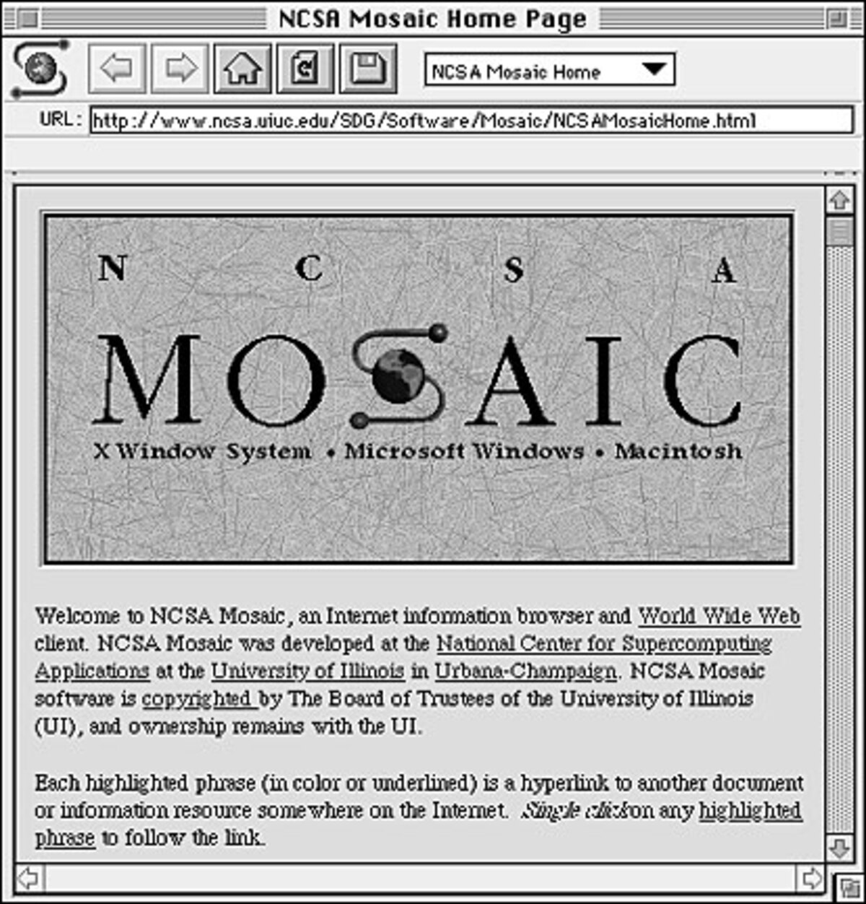

WEB 1.0
WEB 1.0 - это первое поколение Всемирной паутины, которое существовало примерно с 1991 по 2004 год. Его ещё называют «статичным вебом»: сайты в ту эпоху были в основном текстовыми, и обычный пользователь не мог влиять на их содержание. Он мог только читать.
Как выглядел ранний интернет

Первые сайты сильно отличались от современных. Они состояли из HTML-страниц, которые вручную создавали веб-мастера. Каждая страница - отдельный файл. Чтобы обновить информацию на сайте, нужно было вручную отредактировать HTML и загрузить файл на сервер.
Типичный сайт эпохи WEB 1.0:
- Серый или белый фон, чёрный текст, синие ссылки.
- Мигающие гифки, счётчики посещений, надписи «Сайт оптимизирован под Internet Explorer».
- Табличная вёрстка вместо современных CSS-фреймворков.
- Гостевые книги вместо комментариев.
- Форум, где все сообщения шли подряд, без лайков и реакций.
Первые браузеры
В 1993 году вышел NCSA Mosaic - первый браузер, который показывал картинки вперемешку с текстом. В 1994 году Марк Андриссен основал Netscape и выпустил Netscape Navigator, который быстро стал самым популярным браузером 1990-х.
В 1995 году Microsoft выпустила Internet Explorer и начала «войну браузеров». Она встраивала IE в Windows, что дало ему огромное преимущество. К концу 1990-х IE обогнал Netscape и стал основным браузером на долгие годы.
Поиск и первые порталы
Искать информацию в раннем интернете было сложно: не было Google. Сначала пользователи собирали ссылки вручную, потом появились каталоги - например, Yahoo! (1994) и DMOZ. Сайты в них группировались по темам, и человек вручную искал нужное.
В 1998 году появился Google - поисковик, который ранжировал страницы по ссылкам на них. Это полностью изменило способ поиска информации.
Особенности эпохи
- Медленный интернет через телефонную линию (dial-up) - модем шумел и занимал линию.
- Оплата за час подключения.
- Flash-анимации вместо видео.
- Реклама в виде баннеров 468×60.
- Сайты были на HTML вручную, без CMS.
WEB 1.0 был односторонним: компании и авторы публиковали информацию, а пользователи её потребляли. Всё изменилось с появлением WEB 2.0 - об этом на следующей странице.
Ключевые даты
- 1993 - браузер Mosaic.
- 1994 - Netscape Navigator, Yahoo!.
- 1995 - Internet Explorer, начало «войны браузеров».
- 1998 - появление Google.
- 2001 - крах «пузыря доткомов».